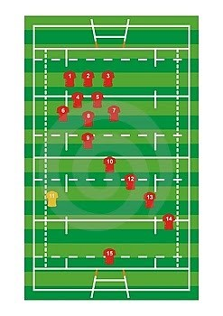
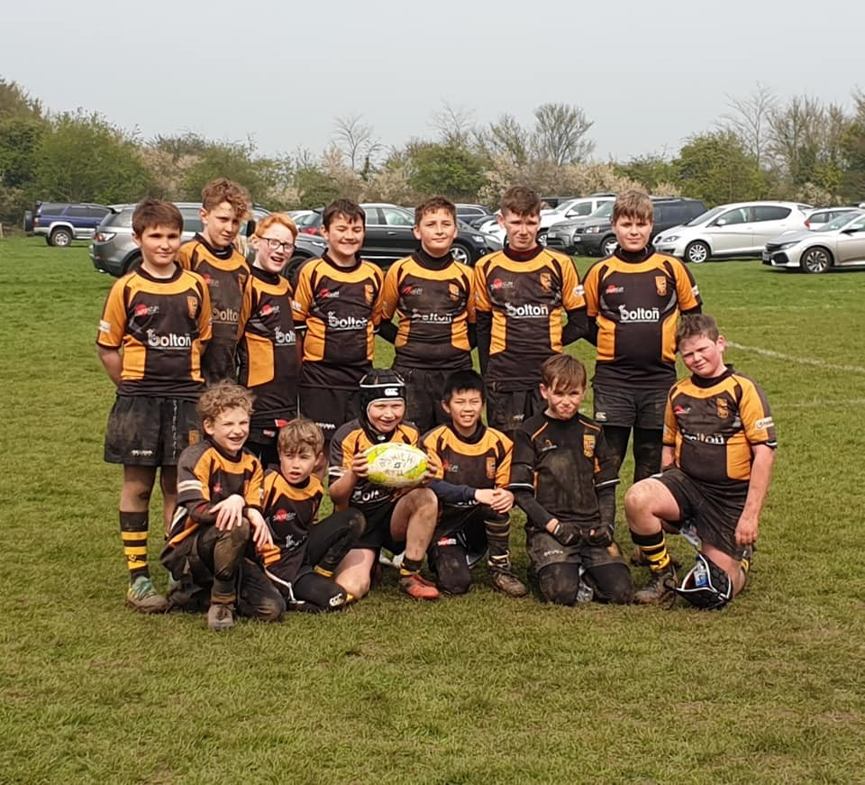
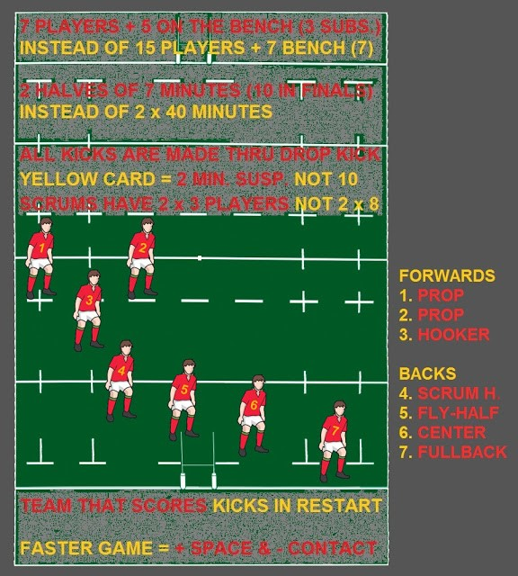

Rugby 15 o rugby union
La versión de este deporte más conocida es la del rugby jugado por equipos de quince jugadores, aunque no es la única. Es lo que se conoce en el mundo anglosajón como rugby union, en referencia a la federación (Union) de clubes que se rigen por unas mismas normas y que, tradicionalmente, habían sido universitarios o aficionados. Un partido dura 80 minutos, dividido en dos partes de 40 minutos, con un descanso de 15 minutos entre cada tiempo. Sigue el modelo propuesto por William Webb Ellis.
Por cada equipo juegan un total de 15 jugadores divididos en dos grupos: forwards o delanteros y backs o tres cuartos. Las denominaciones de los puestos, al igual que el resto de la terminología de juego, varía considerablemente entre España y los demás países hispanohablantes.
Rugby 13 o rugby league
Desde el siglo XIX existe en Inglaterra una variante cuyas reglas difieren en parte y en la que juegan equipos de 13 jugadores; estos fueron profesionales prácticamente desde la implantación de esa modalidad. A ese juego se lo llamó rugby league, en referencia al campeonato de liga en que se enfrentaban los clubes que remuneraban a sus jugadores. De Inglaterra pasó a algunos países de la esfera cultural y de influencia británica (Australia, Nueva Zelanda), así como a Francia. Rugby League Football o rugby a 13 es un deporte de equipo jugado por dos equipos de 13 jugadores 4 en el banco (reservas). Esto se denomina ensayo y tiene un valor, en Rugby League de 4 puntos. Tras el ensayo, el equipo anotador tiene el derecho de patear el balón hacia la portería adversaria, y si consigue pasarlo (transformación) entre los dos palos verticales y por encima del travesaño, anota 2 puntos más. También pueden conseguirse puntos tirando a palos tras un penalti, consistente en tirar a palos durante el juego abierto dejando previamente botar el balón en el suelo. En ambos casos su valor es de 1 punto. El equipo adversario intenta impedir al equipo de ataque realizar este gol obstaculizando al jugador con la pelota.
Rugby 7
El formato de rugby de 7 (seven-a-side) se juega normalmente en torneos cortos (de un día o un fin de semana). Se utiliza el mismo campo que en la modalidad de 15 hombres, pero con solo 7 jugadores por equipo.
Las variaciones respecto de las reglas del juego de quince son: El partido se divide en dos tiempos que duran siete minutos (catorce en total). Las suspensiones por amonestación ("tarjeta amarilla") duran dos minutos, en lugar de diez como en el rugby de quince jugadores. Los scrums son formados por tres jugadores por equipo. Las conversiones solo pueden efectuarse por puntapiés de sobrepique.
Después de marcado el tanto, el puntapié de reinicio es efectuado por el equipo que marcó. Las infracciones en los puntapiés de inicio y reinicio no están sujetas a opción del equipo no infractor: siempre se castigan con un free kick. Actualmente existe un Campeonato del Mundo de Rugby a 7 y un circuito mundial, y ha sido aceptado como deporte olímpico para las Olimpiadas de 2016.